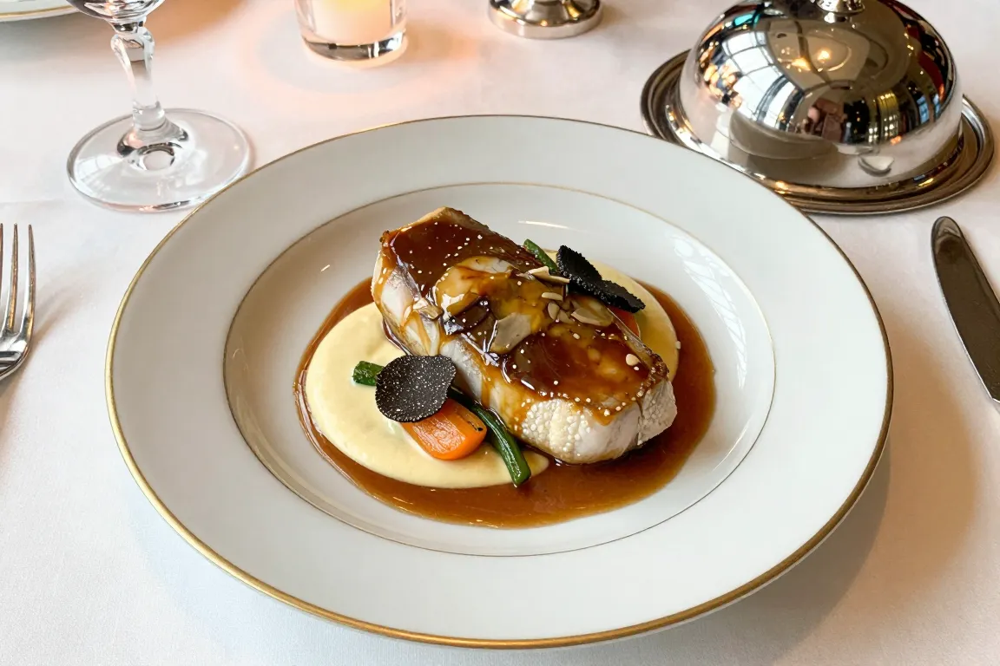

Кухня большого отеля в том виде, в каком её записал Огюст Эскофье. Бригада станций готовит меню из перемен по твёрдой системе бульонов и основных соусов и подаёт каждое блюдо на отдельной тарелке. «Кулинарный путеводитель» 1903 года хранит около 5000 рецептов системы.

Главная идея
Упростить Карема и сделать кухню системой: каждое блюдо вырастает из малого набора основ, и готовит его станция, делающая одно дело.
Принципы дизайна
Держите готовыми каждый день белый бульон, коричневый бульон и рыбный фюме: любой соус начинается с одного из них.
Выводите каждый соус из одного из пяти основных: эспаньоль, велуте, бешамель, томатного и голландского.
Делите кухню на станции: сосье, ротисёр, пуассонье, антреметье, гард-манже и кондитер.
Подавайте по-русски: перемена за переменой, каждая на тарелке, в порядке меню.
Сокращайте число гарниров, чтобы главный продукт оставался предметом тарелки.
Называйте блюдо по гарниру или покровителю: Россини, Мельба, Верджини, Жаннет.
Заканчивайте каждый соус маслом вне огня, ради блеска.
Режьте каждый элемент гарнира одинаково: жюльен, брюнуаз, турне на 7 граней.